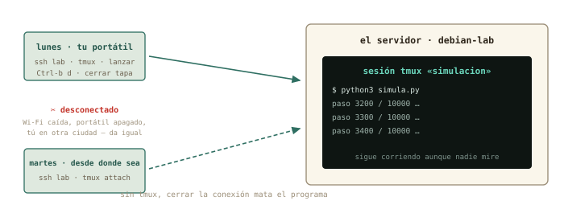
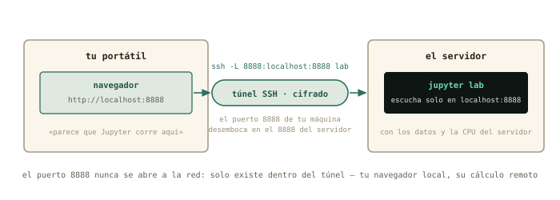
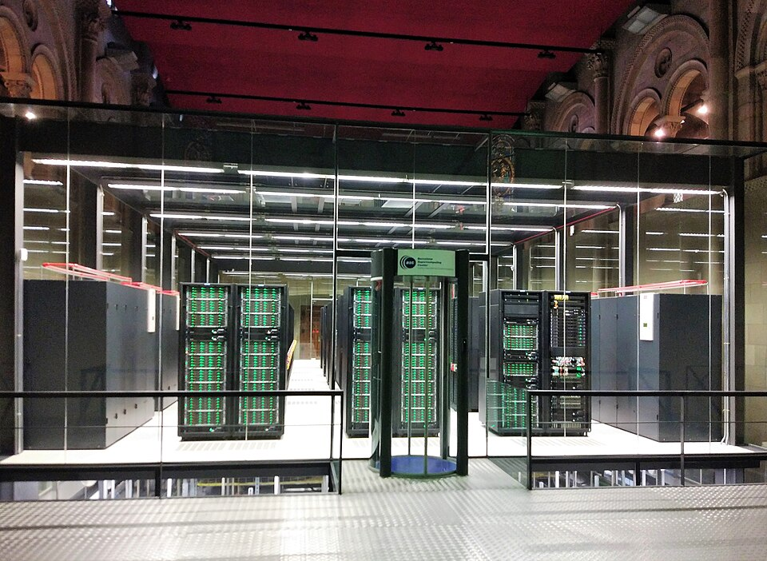
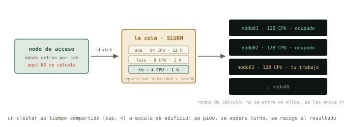

12 Vivir en remoto
Última sesión numerada, y la que junta todo. Ya entras y sales de tu servidor; hoy aprendes a quedarte sin estar: lanzar una simulación, cerrar el portátil, volver mañana desde otra ciudad y encontrarla terminada. Después, el truco favorito del físico computacional — un Jupyter corriendo en el servidor, abierto en el navegador de tu portátil por un túnel cifrado. Y de postre, dos cosas que te van a nombrar el primer día del doctorado: qué es «la nube» en términos concretos, y qué es SLURM, la cola de trabajos de todos los clústeres del mundo.
Al terminar esta sesión sabrás
- Por qué un programa lanzado por SSH muere al cerrar la conexión — y cómo evitarlo.
- Usar
tmux: crear una sesión, desconectarte de ella, volver a engancharla desde cualquier sitio. - Abrir un túnel SSH y ver en tu navegador un servicio que solo existe dentro del servidor.
- Ejecutar Jupyter en el servidor con los datos y la CPU de allí, y trabajar desde tu portátil.
- Qué es exactamente «una máquina en la nube», qué te dan y qué se paga.
- La anatomía de un clúster y de un job script de SLURM: enviar, consultar, cancelar.
12.1 La sesión que muere
Un experimento de treinta segundos que explica el capítulo. Entra en debian-lab, lanza algo largo en segundo plano (capítulo 5), y cierra la conexión:
marcos@portatil:~$ ssh lab
marcos@debian-lab:~$ sleep 600 &
[1] 1204
marcos@debian-lab:~$ exit
marcos@portatil:~$ ssh lab "ps aux | grep sleep"
marcos 1231 0.0 0.0 6612 2200 ? Ss 20:02 0:00 grep sleepEl sleep ha desaparecido: al cerrar la sesión, el shell envía a todos sus hijos la señal SIGHUP — «se ha colgado la línea», nombre heredado de los módems del capítulo 11 — y los procesos terminan. Tu simulación de diez horas moriría a la primera caída de Wi-Fi. Hay parches (nohup, el & con disown), pero la solución que usa todo el mundo es otra idea: que la sesión viva en el servidor, y que tú te enganches y desenganches de ella.
12.2 tmux: la sesión que no muere
tmux (terminal multiplexer) crea sesiones de terminal que pertenecen al servidor, no a tu conexión. Te desconectas y siguen; vuelves — desde el mismo portátil o desde otro — y las recuperas tal como las dejaste.

Instálalo en debian-lab (sudo apt install tmux) y repite el experimento, esta vez dentro de una sesión con nombre:
marcos@debian-lab:~$ tmux new -s simulacionLa pantalla cambia: una barra verde abajo con el nombre de la sesión. Estás dentro de tmux. Lanza tu trabajo largo — el simula.py de la práctica, o el sleep 600 de antes — y ahora el gesto clave: Ctrl+b y luego d (detach, desenganchar). Vuelves a tu prompt normal; la sesión sigue viva detrás. Cierra SSH, apaga la Wi-Fi si quieres, y vuelve:
marcos@portatil:~$ ssh lab
marcos@debian-lab:~$ tmux ls
simulacion: 1 windows (created Tue Aug 25 20:10:41 2026)
marcos@debian-lab:~$ tmux attach -t simulacionAhí está, con su sleep todavía contando. Todo lo que hay que saber de tmux para vivir en remoto cabe en cuatro gestos: tmux new -s nombre, Ctrl+b d, tmux ls, tmux attach -t nombre. (Cuando quieras más: Ctrl+b c abre otra ventana en la misma sesión, Ctrl+b % parte la pantalla en dos, y exit dentro de la última ventana cierra la sesión.)
✚ Truco · La regla de los servidores
En un servidor ajeno, lo primero que se teclea tras entrar es tmux attach || tmux new: engánchate a tu sesión si existe, crea una si no. Así, cada trabajo lanzado sobrevive a tu conexión, y cuando el administrador pregunte «¿lo tienes en tmux?», la respuesta será siempre sí. Su hermano mayor, screen, hace lo mismo y lo encontrarás en máquinas antiguas: screen -S nombre, Ctrl+a d, screen -r nombre.
12.3 El túnel: un servicio remoto en tu navegador
Segunda idea del capítulo, y la más elegante del curso. En el capítulo 10 viste que un servicio escucha en un puerto, y que un puerto solo abierto a localhost es invisible desde fuera. SSH puede tender un túnel: hacer que un puerto de tu máquina desemboque en un puerto del servidor, cifrado, sin abrir nada a la red.

-L: puerto local, dos puntos, destino visto desde el servidor. Tu navegador no sabe que está hablando con otra máquina.
La prueba más simple no necesita instalar nada: Python trae un servidor web de juguete. En debian-lab, dentro de tmux:
marcos@debian-lab:~$ python3 -m http.server 8000 --bind 127.0.0.1
Serving HTTP on 127.0.0.1 port 8000 (http://127.0.0.1:8000/) ...Escucha solo en 127.0.0.1: desde tu Mint, nmap debian-lab no lo vería. Ahora, desde tu Mint, la conexión con túnel:
marcos@portatil:~$ ssh -L 8000:localhost:8000 labY en tu navegador, http://localhost:8000: la lista de ficheros de la casa de debian-lab, servida por una máquina que no tiene ese puerto abierto. -L 8000:localhost:8000 se lee «mi puerto 8000 → lo que el servidor llama localhost:8000». Mientras esa sesión SSH esté abierta, el túnel existe; al cerrarla, desaparece.
Y ahora el caso estrella: Jupyter en el servidor. Los datos pesados, la CPU de cálculo y el entorno de Python viven allí; tu portátil solo pone el navegador:
marcos@debian-lab:~$ sudo apt install jupyter-notebook
marcos@debian-lab:~$ jupyter notebook --no-browser --port 8888
http://localhost:8888/tree?token=4f2a9c…Con ssh -L 8888:localhost:8888 lab abierto en tu Mint, esa URL — copiada con su token — funciona en tu navegador. Lo que ves es un Jupyter normal; lo que pasa es que cada celda se ejecuta a kilómetros. Lánzalo dentro de tmux y sobrevivirá a tus desconexiones: mañana, nuevo túnel, misma sesión, todo donde estaba. Este flujo — tmux + túnel + Jupyter — es, literalmente, cómo trabaja la física computacional en 2026.
△ Cuidado · Por qué el túnel y no «abrir el puerto»
La tentación es lanzar Jupyter escuchando en todas las interfaces y entrar directo por http://debian-lab:8888. Funcionaría — y dejaría un intérprete de Python con tus permisos abierto a toda la red, sin cifrar. En el servidor de la universidad, además, el portero del capítulo 10 no te dejaría. El túnel resuelve las dos cosas: nada se abre, todo va cifrado, y solo tú — con tu clave — lo ves.
12.4 Qué es «la nube», en concreto
Con el curso hecho, la palabra deja de ser humo. Una máquina en la nube es una VM como tu debian-lab, en un anfitrión de KVM (capítulo 7) que vive en un edificio de otro — y que alquilas por horas. Te dan exactamente tres cosas: una dirección IP pública (capítulo 9: sin NAT delante), un usuario, y un sitio donde pegar tu clave pública (capítulo 11). Desde ese momento es ssh usuario@ip, y todo este bloque aplica sin cambiar una coma. Lo que se paga es el tiempo encendida, el disco y el tráfico que sale — por eso el primer hábito de la nube es apagar lo que no se usa. Y la física de la sección de ping decide dónde: una máquina en Fráncfort responde a 30 ms; la misma en Virginia, a 100.
◷ Historia · Tiempo compartido, tercera edición
El curso ha contado la misma historia tres veces. En los 70, muchos usuarios compartían un ordenador por turnos de milisegundos (capítulo 4). En 1967, IBM les dio a cada uno un ordenador de mentira (capítulo 7). Y hoy, un clúster de cálculo — miles de nodos como tu debian-lab, pero físicos, unidos por una red rapidísima y compartidos por cientos de investigadores — reparte esos nodos con una cola de trabajos. MareNostrum 4, en la capilla de Torre Girona de Barcelona, tenía 3 456 nodos y 165 888 núcleos; su sucesor multiplica eso. Las cuentas de la Red Española de Supercomputación se piden por convocatoria, y tu grupo probablemente ya tenga horas: el día que te den un usuario, este capítulo será tu primera semana.

debian-lab físicos compartidos por una cola. Foto: Gemmaribasmaspoch, CC BY-SA 4.0, Wikimedia Commons.
12.5 SLURM en dos páginas
En un clúster no ejecutas nada: pides. Entras por SSH en el nodo de acceso (login node), describes tu trabajo en un fichero, se lo entregas a la cola, y cuando SLURM encuentra hueco en los nodos de cálculo, lo ejecuta y te deja los resultados. Tres reglas que todo administrador agradecerá que sepas antes de llegar: en el nodo de acceso no se calcula (se edita, se envía, se consulta); se pide lo que se necesita — pedir de más retrasa tu turno; y los resultados van a donde te digan (scratch, normalmente), no a tu casa.

El fichero que se entrega es un job script — y ya sabes escribirlo: es un script de bash del capítulo 4, con unas líneas de comentario que SLURM lee como instrucciones:
#!/bin/bash
#SBATCH --job-name=pendulo
#SBATCH --cpus-per-task=4
#SBATCH --mem=8G
#SBATCH --time=02:00:00
#SBATCH --output=pendulo_%j.log
module load python/3.12
cd $HOME/pendulo
python3 simula.py --pasos 1000000 > resultados.csvCada #SBATCH es una petición: nombre, núcleos, memoria, tiempo máximo, dónde escribir la salida (%j se sustituye por el número de trabajo). Para bash son comentarios — el script se puede probar localmente con bash trabajo.sh —; para SLURM son el contrato. El module load es el mecanismo con que los clústeres ofrecen versiones de software sin pisarse: cada module ajusta tu $PATH del capítulo 5. Y el ciclo entero son cuatro comandos:
usuario@login1:~$ sbatch trabajo.sh
Submitted batch job 48213
usuario@login1:~$ squeue -u usuario
JOBID PARTITION NAME USER ST TIME NODES NODELIST(REASON)
48213 general pendulo usuario PD 0:00 1 (Priority)
usuario@login1:~$ squeue -u usuario
48213 general pendulo usuario R 4:12 1 nodo03
usuario@login1:~$ scancel 48213sbatch entrega; squeue consulta — PD es pendiente en la cola, R es corriendo, y la columna final dice por qué espera o dónde corre —; scancel retira. Cuando termine, pendulo_48213.log tendrá lo que el script escribiera por pantalla, y resultados.csv estará donde lo dejaste. Para pruebas cortas existe srun --pty bash: te da una terminal dentro de un nodo de cálculo durante un rato, para probar antes de enviar en serio. Con esto, el primer día de doctorado tendrás más recorrido que la mayoría de los que llevan un año.
12.6 Práctica: vivir en el servidor
Cuaderno en marcha (script sesion12.log). Los ejercicios de hoy son el flujo de trabajo que usarás en la vida real; hazlos en orden.
Nivel 1 · Lo esencial
Ejercicio 12.1 · La muerte de la sesión
Reproduce el experimento del capítulo: sleep 600 & dentro de una sesión SSH, exit, y comprueba desde fuera si sigue vivo. Repite con tmux — y comprueba de nuevo. Pista: ssh lab "ps aux | grep sleep" es la comprobación sin entrar; la primera vez desaparecerá, la segunda seguirá ahí.
Sin tmux, el grep solo se encuentra a sí mismo: SIGHUP mató al sleep. Con tmux new -s prueba, sleep 600 &, Ctrl+b d, exit, la comprobación muestra el sleep vivo — y tmux attach -t prueba te lo devuelve.
Por qué así — Ver morir el proceso una vez vale más que cualquier explicación: a partir de hoy el reflejo «¿lo tengo en tmux?» te saldrá solo antes de lanzar nada que dure más que un café.
Ejercicio 12.2 · La simulación que sobrevive
Crea en debian-lab un simula.py de diez minutos (abajo), lánzalo dentro de una sesión tmux llamada simulacion, desengánchate, cierra SSH, espera unos minutos, vuelve a entrar desde tu Mint y comprueba el progreso — sin engancharte, con ssh lab "tail -2 progreso.txt" — y luego engánchate para verlo terminar. Pista: con nano simula.py:
import time
for paso in range(1, 601):
with open("progreso.txt", "a") as f:
f.write(f"paso {paso}\n")
print(f"paso {paso} / 600")
time.sleep(1)tmux new -s simulacion, python3 simula.py, desenganchar, exit. Minutos después: ssh lab "tail -2 progreso.txt" muestra un paso avanzado; ssh lab + tmux attach -t simulacion enseña la cuenta en directo. El programa nunca supo que te fuiste.
Por qué así — Es el flujo del físico computacional entero en miniatura: lanzar, irse, consultar sin entrar (el comando remoto del capítulo 11), volver. Sustituye simula.py por tu código de verdad y 600 por doce horas: el gesto es idéntico.
Ejercicio 12.3 · Tu primer túnel
En debian-lab (dentro de tmux), sirve tu casa con python3 -m http.server 8000 --bind 127.0.0.1. Comprueba desde tu Mint que el puerto no está abierto (nmap debian-lab), abre el túnel con ssh -L 8000:localhost:8000 lab, y visita http://localhost:8000 en tu navegador. Cierra la sesión SSH y recarga la página. Pista: el túnel solo existe mientras esa conexión SSH esté abierta.
nmap sigue viendo solo el 22 — el 8000 es privado del servidor. Con el túnel abierto, el navegador muestra el listado de ficheros de la VM (ahí estará progreso.txt). Al cerrar SSH, la página deja de cargar: el túnel murió con la conexión.
Por qué así — Has visto las tres propiedades del túnel: no abre puertas, va por SSH, y vive lo que vive la conexión. Todo lo que sigue (Jupyter, y cualquier panel web de un servidor) es este mismo gesto con otro número.
Nivel 2 · El mecanismo
Ejercicio 12.4 · Jupyter a distancia
Instala jupyter-notebook en debian-lab, lánzalo dentro de tmux con --no-browser --port 8888, abre el túnel del 8888 y trabaja desde tu navegador: crea un cuaderno que lea progreso.txt y cuente sus líneas. Desconéctate, vuelve, y comprueba que el cuaderno sigue donde estaba. Pista: la URL con el token la imprime Jupyter al arrancar; si la pierdes, jupyter notebook list la repite.
sudo apt install jupyter-notebook; en tmux: jupyter notebook --no-browser --port 8888; en Mint: ssh -L 8888:localhost:8888 lab y la URL con token en el navegador. El cuaderno con len(open("progreso.txt").readlines()) da 600. Tras cerrar y reabrir túnel, el cuaderno y su kernel siguen vivos: viven en tmux.
Por qué así — Este es el montaje completo: los datos y el cálculo en la máquina remota, tu comodidad en la local. En un clúster el patrón es el mismo, con Jupyter lanzado desde un nodo de cálculo vía SLURM — pregúntalo allí: casi todos tienen una receta escrita para exactamente esto.
Ejercicio 12.5 · Leer un job script
Sin ejecutar nada (no tienes SLURM… todavía): lee el script de la sección y responde en el cuaderno — ¿cuántos núcleos pide?, ¿cuánto tiempo máximo?, ¿dónde quedará lo que el programa imprima por pantalla si el trabajo recibe el número 48213?, ¿qué pasa si el programa tarda tres horas?, ¿y por qué bash trabajo.sh lo ejecutaría igualmente en tu portátil? Pista: las líneas #SBATCH son comentarios para bash y contrato para SLURM.
4 núcleos; 2 horas; en pendulo_48213.log; si excede el tiempo, SLURM lo mata sin contemplaciones (y por eso se pide con margen, pero no de más); y bash ignora las líneas #, así que ejecuta el cd y el python3 sin más — salvo module load, que solo existe en el clúster.
Por qué así — Leer con soltura un job script antes de tener acceso a un clúster es exactamente la ventaja que este curso quería darte. El resto — particiones, colas con nombre, GPU — son variantes de estas cinco líneas.
Nivel 3 · El reto (opcional)
Ejercicio 12.6 · Tu propio job script, ensayado en local
Escribe trabajo.sh para tu simula.py con cabecera #SBATCH (nombre, 1 núcleo, 512 MB, 15 minutos, salida simula_%j.log), hazlo ejecutable, y ensáyalo en debian-lab con bash trabajo.sh — sin SLURM, las peticiones se ignoran y el script corre igual. Verifica que produce progreso.txt. Pista: quita el module load (no existe en tu VM) y usa rutas absolutas, como en el capítulo 1: en un nodo de cálculo no sabes desde dónde te ejecutan.
Un script con shebang, cinco #SBATCH, cd /home/marcos y python3 simula.py. chmod u+x trabajo.sh y bash trabajo.sh lo ejecuta igual que lo haría un nodo de cálculo. El día que tengas cuenta en un clúster, este fichero — más el module load que allí te indiquen — es lo primero que enviarás con sbatch.
Por qué así — Has cerrado el círculo del curso: un script de bash (cap. 4) con rutas absolutas (cap. 1), lanzado en un servidor (cap. 8) al que entras por SSH con clave (cap. 11), preparado para una cola (cap. 12). Doce sesiones, un físico que sabe dónde está parado. Guarda sesion12.log.
12.7 Autocomprobación
Marca una respuesta por pregunta; la corrección es inmediata.
Lanzas python3 simula.py por SSH y se corta la Wi-Fi. Sin tmux, el programa…
Para desengancharte de una sesión tmux dejándola viva:
tmux attach -t nombre. Ctrl+C mataría el programa que corre dentro.ssh -L 8888:localhost:8888 lab hace que…
localhost; el trabajo ocurre lejos.Una «máquina en la nube» es, en concreto…
En un clúster con SLURM, el nodo de acceso sirve para…
sbatch. El trabajo corre donde SLURM decida.Las líneas #SBATCH --time=02:00:00 de un job script son…
bash en cualquier máquina y se entrega con sbatch en el clúster: mismo fichero, dos lectores.#: comentarios. SLURM las lee como el contrato del trabajo. En tu portátil no hacen falta ni estorban.Autocomprobación (test de la sección 12.8) — Respuestas: 1 b · 2 b · 3 b · 4 a · 5 b · 6 a.
Lo que queda
Doce sesiones: sabes hablar con la máquina, abrirle el capó, instalarla, conectarla y trabajar en ella desde lejos. Queda el ensayo general: el proyecto final, en el que montas de cero un servidor — VM, instalación, red, SSH con clave, dataset, análisis en tmux — sin más guía que una lista de objetivos. Y los anexos para cuando los necesites: scripting con bucles, la IA como herramienta y no como oráculo, y el camino para quien venga de Windows. Guarda sesion12.log: son doce medidas.
cap. 12 v0.1 · piloto — anota tiempo real invertido, dudas y erratas junto a tu sesion12.log